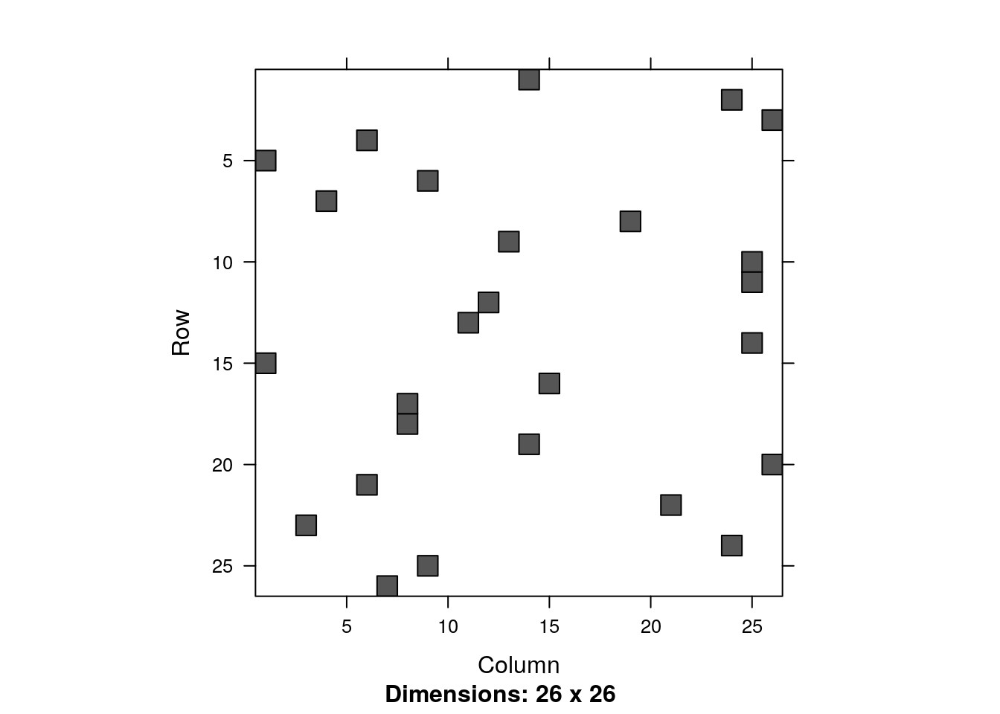
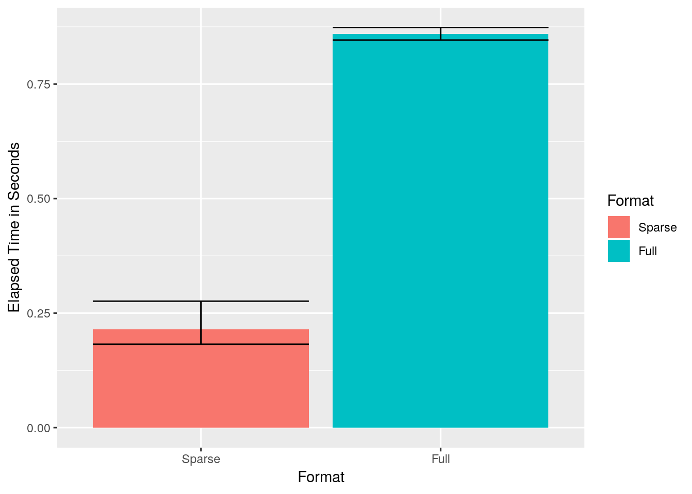
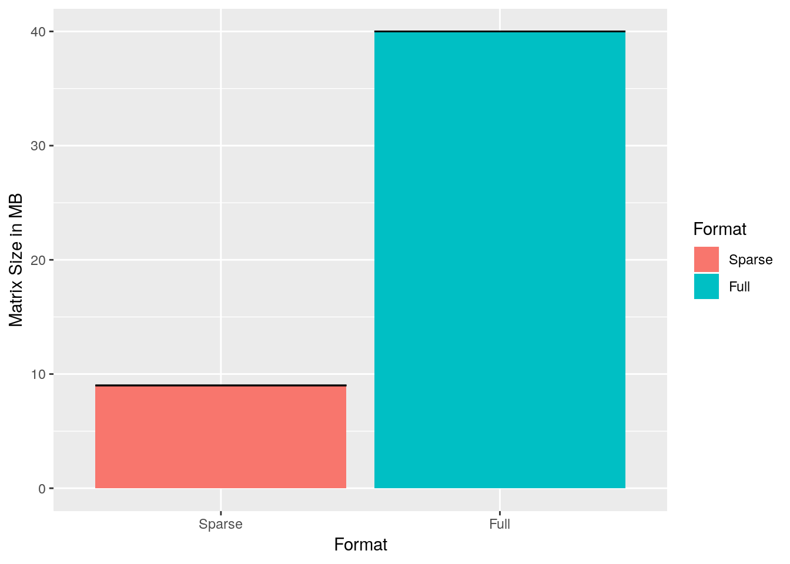

Chapter 14 Sparse Representations
Analyzing “bigdata” in R is a challenge because the workspace is memory resident, i.e., all your objects are stored in RAM.
As a rule of thumb, fitting models requires about 5 times the size of the data.
This means that if you have 1 GB of data, you might need about 5 GB to fit a linear models.
We will discuss how to compute out of RAM in the Memory Efficiency Chapter 15.
In this chapter, we discuss efficient representations of your data, so that it takes less memory.
The fundamental idea, is that if your data is sparse, i.e., there are many zero entries in your data, then a naive data.frame or matrix will consume memory for all these zeroes.
If, however, you have many recurring zeroes, it is more efficient to save only the non-zero entries.
When we say data, we actually mean the model.matrix.
The model.matrix is a matrix that R grows, converting all your factors to numeric variables that can be computed with.
Dummy coding of your factors, for instance, is something that is done in your model.matrix.
If you have a factor with many levels, you can imagine that after dummy coding it, many zeroes will be present.
The Matrix package replaces the matrix class, with several sparse representations of matrix objects.
When using sparse representation, and the Matrix package, you will need an implementation of your favorite model fitting algorithm (e.g. lm) that is adapted to these sparse representations; otherwise, R will cast the sparse matrix into a regular (non-sparse) matrix, and you will have saved nothing in RAM.
sparse function.
Before we go into details, here is a simple example.
We will create a factor of letters with the letters function.
Clearly, this factor can take only \(26\) values.
This means that \(25/26\) of the model.matrix will be zeroes after dummy coding.
We will compare the memory footprint of the naive model.matrix with the sparse representation of the same matrix.
library(magrittr)
reps <- 1e6 # number of samples
y<-rnorm(reps)
x<- letters %>%
sample(reps, replace=TRUE) %>%
factorThe object x is a factor of letters:
head(x)## [1] n g q c z d
## Levels: a b c d e f g h i j k l m n o p q r s t u v w x y zWe dummy code x with the model.matrix function.
X.1 <- model.matrix(~x-1)
head(X.1)## xa xb xc xd xe xf xg xh xi xj xk xl xm xn xo xp xq xr xs xt xu xv xw xx
## 1 0 0 0 0 0 0 0 0 0 0 0 0 0 1 0 0 0 0 0 0 0 0 0 0
## 2 0 0 0 0 0 0 1 0 0 0 0 0 0 0 0 0 0 0 0 0 0 0 0 0
## 3 0 0 0 0 0 0 0 0 0 0 0 0 0 0 0 0 1 0 0 0 0 0 0 0
## 4 0 0 1 0 0 0 0 0 0 0 0 0 0 0 0 0 0 0 0 0 0 0 0 0
## 5 0 0 0 0 0 0 0 0 0 0 0 0 0 0 0 0 0 0 0 0 0 0 0 0
## 6 0 0 0 1 0 0 0 0 0 0 0 0 0 0 0 0 0 0 0 0 0 0 0 0
## xy xz
## 1 0 0
## 2 0 0
## 3 0 0
## 4 0 0
## 5 0 1
## 6 0 0We call MatrixModels for an implementation of model.matrix that supports sparse representations.
suppressPackageStartupMessages(library(MatrixModels))
X.2<- as(x,"sparseMatrix") %>% t # Makes sparse dummy model.matrix
head(X.2)## 6 x 26 sparse Matrix of class "dgCMatrix"## [[ suppressing 26 column names 'a', 'b', 'c' ... ]]##
## [1,] . . . . . . . . . . . . . 1 . . . . . . . . . . . .
## [2,] . . . . . . 1 . . . . . . . . . . . . . . . . . . .
## [3,] . . . . . . . . . . . . . . . . 1 . . . . . . . . .
## [4,] . . 1 . . . . . . . . . . . . . . . . . . . . . . .
## [5,] . . . . . . . . . . . . . . . . . . . . . . . . . 1
## [6,] . . . 1 . . . . . . . . . . . . . . . . . . . . . .Notice that the matrices have the same dimensions:
dim(X.1)## [1] 1000000 26dim(X.2)## [1] 1000000 26The memory footprint of the matrices, given by the pryr::object_size function, are very very different.
pryr::object_size(X.1)## Registered S3 method overwritten by 'pryr':
## method from
## print.bytes Rcpp## 272 MBpryr::object_size(X.2)## 12 MBThings to note:
- The sparse representation takes a whole lot less memory than the non sparse.
- The
as(,"sparseMatrix")function grows the dummy variable representation of the factorx. - The pryr package provides many facilities for inspecting the memory footprint of your objects and code.
With a sparse representation, we not only saved on RAM, but also on the computing time of fitting a model. Here is the timing of a non sparse representation:
system.time(lm.1 <- lm(y ~ X.1)) ## user system elapsed
## 5.313 3.798 2.305Well actually, lm is a wrapper for the lm.fit function.
If we override all the overhead of lm, and call lm.fit directly, we gain some time:
system.time(lm.1 <- lm.fit(y=y, x=X.1))## user system elapsed
## 1.763 1.864 0.636We now do the same with the sparse representation:
system.time(lm.2 <- MatrixModels:::lm.fit.sparse(X.2,y))## user system elapsed
## 0.159 0.007 0.167It is only left to verify that the returned coefficients are the same:
all.equal(lm.2, unname(lm.1$coefficients), tolerance = 1e-12)## [1] TRUEYou can also visualize the non zero entries, i.e., the sparsity structure.
image(X.2[1:26,1:26])
14.1 Sparse Matrix Representations
We first distinguish between the two main goals of the efficient representation:
(i) efficient writing, i.e., modification;
(ii) efficient reading, i.e., access.
For our purposes, we will typically want efficient reading, since the model.matrix will not change while a model is being fitted.
Representations designed for writing include the dictionary of keys, list of lists, and a coordinate list. Representations designed for efficient reading include the compressed sparse row and compressed sparse column.
14.1.1 Coordinate List Representation
A coordinate list representation, also known as COO, or triplet represantation is simply a list of the non zero entries. Each element in the list is a triplet of the row, column, and value, of each non-zero entry in the matrix. For instance the matrix \[ \begin{bmatrix} 0 & a_2 & 0 \\ 0 & 0 & b_3 \end{bmatrix} \] will be \[ \begin{bmatrix} 1 & 2 & a_2 \\ 2 & 3 & b_3 \end{bmatrix}. \]
14.1.2 Compressed Row Oriented Representation
Compressed row oriented representation, also known as compressed sparse row, or CSR. CSR is similar to COO with a compressed row vector. Instead of holding the row of each non-zero entry, the row vector holds the locations in the colum vector where a row is increased. See the next illustration.

The CSR data structure. From Shah and Gilbert (2004). Remember that MATLAB is written in C, where the indexing starts at \(0\), and not \(1\).
14.1.3 Compressed Column Oriented Representation
A compressed column oriented representation, also known as compressed sparse column, or CSC. In CSC the column vector is compressed. Unlike CSR where the row vector is compressed. The nature of statistical applications is such, that CSC representation is typically the most economical, justifying its popularity.
14.1.4 Sparse Algorithms
We will go into the details of some algorithms in the Numerical Linear Algebra Chapter 17. For our current purposes two things need to be emphasized:
Working with sparse representations requires using a function that is aware of the representation you are using.
A mathematician may write \(Ax=b \Rightarrow x=A^{-1}b\). This is a predicate of \(x\),i.e., a property that \(x\) satisfies, which helps with its analysis. A computer, however, would never compute \(A^{-1}\) in order to find \(x\), but rather use one of many endlessly many numerical algorithms. A computer will typically “search” various \(x\)’s until it finds the one that fulfils the predicate.
14.2 Sparse Matrices and Sparse Models in R
14.2.1 The Matrix Package
The Matrix package provides facilities to deal with real (stored as double precision), logical and so-called “pattern” (binary) dense and sparse matrices. There are provisions to provide integer and complex (stored as double precision complex) matrices.
The sparse matrix classes include:
TsparseMatrix: a virtual class of the various sparse matrices in triplet representation.CsparseMatrix: a virtual class of the various sparse matrices in CSC representation.RsparseMatrix: a virtual class of the various sparse matrices in CSR representation.
For matrices of real numbers, stored in double precision, the Matrix package provides the following (non virtual) classes:
dgTMatrix: a general sparse matrix of doubles, in triplet representation.dgCMatrix: a general sparse matrix of doubles, in CSC representation.dsCMatrix: a symmetric sparse matrix of doubles, in CSC representation.dtCMatrix: a triangular sparse matrix of doubles, in CSC representation.
Why bother with distinguishing between the different shapes of the matrix?
Because the more structure is assumed on a matrix, the more our (statistical) algorithms can be optimized.
For our purposes dgCMatrix will be the most useful.
14.2.2 The glmnet Package
As previously stated, an efficient storage of the model.matrix is half of the story.
We now need implementations of our favorite statistical algorithms that make use of this representation.
At the time of writing, a very useful package that does that is the glmnet package, which allows to fit linear models, generalized linear models, with ridge, lasso, and elastic net regularization.
The glmnet package allows all of this, using the sparse matrices of the Matrix package.
The following example is taken from John Myles White’s blog, and compares the runtime of fitting an OLS model, using glmnet with both sparse and dense matrix representations.
suppressPackageStartupMessages(library('glmnet'))
set.seed(1)
performance <- data.frame()
for (sim in 1:10){
n <- 10000
p <- 500
nzc <- trunc(p / 10)
x <- matrix(rnorm(n * p), n, p) #make a dense matrix
iz <- sample(1:(n * p),
size = n * p * 0.85,
replace = FALSE)
x[iz] <- 0 # sparsify by injecting zeroes
sx <- Matrix(x, sparse = TRUE) # save as a sparse object
beta <- rnorm(nzc)
fx <- x[, seq(nzc)] %*% beta
eps <- rnorm(n)
y <- fx + eps # make data
# Now to the actual model fitting:
sparse.times <- system.time(fit1 <- glmnet(sx, y)) # sparse glmnet
full.times <- system.time(fit2 <- glmnet(x, y)) # dense glmnet
sparse.size <- as.numeric(object.size(sx))
full.size <- as.numeric(object.size(x))
performance <- rbind(performance, data.frame(Format = 'Sparse',
UserTime = sparse.times[1],
SystemTime = sparse.times[2],
ElapsedTime = sparse.times[3],
Size = sparse.size))
performance <- rbind(performance, data.frame(Format = 'Full',
UserTime = full.times[1],
SystemTime = full.times[2],
ElapsedTime = full.times[3],
Size = full.size))
}Things to note:
- The simulation calls
glmnettwice. Once with the non-sparse objectx, and once with its sparse versionsx. - The degree of sparsity of
sxis \(85\%\). We know this because we “injected” zeroes in \(0.85\) of the locations ofx. - Because
yis continuousglmnetwill fit a simple OLS model. We will see later how to use it to fit GLMs and use lasso, ridge, and elastic-net regularization.
We now inspect the computing time, and the memory footprint, only to discover that sparse representations make a BIG difference.
suppressPackageStartupMessages(library('ggplot2'))
ggplot(performance, aes(x = Format, y = ElapsedTime, fill = Format)) +
stat_summary(fun.data = 'mean_cl_boot', geom = 'bar') +
stat_summary(fun.data = 'mean_cl_boot', geom = 'errorbar') +
ylab('Elapsed Time in Seconds') 
ggplot(performance, aes(x = Format, y = Size / 1000000, fill = Format)) +
stat_summary(fun.data = 'mean_cl_boot', geom = 'bar') +
stat_summary(fun.data = 'mean_cl_boot', geom = 'errorbar') +
ylab('Matrix Size in MB') 
How do we perform other types of regression with the glmnet?
We just need to use the family and alpha arguments of glmnet::glmnet.
The family argument governs the type of GLM to fit: logistic, Poisson, probit, or other types of GLM.
The alpha argument controls the type of regularization. Set to alpha=0 for ridge, alpha=1 for lasso, and any value in between for elastic-net regularization.
14.2.3 The MatrixModels Package
The MatrixModels package is designed to fit various models (linear, non-linear, generalized) using sparse matries.
The function MatrixModels::glm4 can easily replace stats::glm for all your needs.
Unlike glmnet, the MatrixModels package will not offer you model regularization.
14.2.4 The SparseM Package
Basic linear algebra with sparse matrices.
14.3 Beyond Sparsity
When you think of it, sparse matrix representations is nothing but a combo of lossless compression, with accompanying matrix algorithms. Can this combo be leveraged when matrices are not sparse? At the time of writing, I am unaware of R objects that explot this idea, but it is generally possible.
14.4 Apache Arrow
It is quite possible that your data contain redundancies, other than the number 0. In this case, you can still find efficient representations, but you will need something more general than CRC and the likes. Apache Arrow is a a set of C++ functions, for efficient representation of objects in memory. It can detect redundancies, and exploit them for efficient representation, but it can do much much more:
- It is the technology underlying many software suits, and is supporteb by R and Python.
- The memory representation is designed for easy read/writes into disk or network. This means that saving your file, or sending it over the network, will require very little CPU. For optimal performance save it into Apache Parquet using
arrow::write_parquet, or Feather file formats, using thearrow::write_feather()function. Read functions are also provided.
Arrow is a very exciting technology, and will certainly become dominant in the near future.
14.5 Bibliographic Notes
The best place to start reading on sparse representations and algorithms is the vignettes of the Matrix package. Gilbert, Moler, and Schreiber (1992) is also a great read for some general background. See here for a blog-level review of sparse matrix formats. For the theory on solving sparse linear systems see Davis (2006). For general numerical linear algebra see Gentle (2012).
14.6 Practice Yourself
What is the CSC representation of the following matrix: \[\begin{bmatrix} 0 & 1 & 0 \\ 0 & 0 & 6 \\ 1 & 0 & 1 \end{bmatrix}\]
Write a function that takes two matrices in CSC and returns their matrix product.
References
Davis, Timothy A. 2006. Direct Methods for Sparse Linear Systems. SIAM.
Gentle, James E. 2012. Numerical Linear Algebra for Applications in Statistics. Springer Science & Business Media.
Gilbert, John R, Cleve Moler, and Robert Schreiber. 1992. “Sparse Matrices in Matlab: Design and Implementation.” SIAM Journal on Matrix Analysis and Applications 13 (1). SIAM: 333–56.
Shah, Viral, and John R Gilbert. 2004. “Sparse Matrices in Matlab* P: Design and Implementation.” In International Conference on High-Performance Computing, 144–55. Springer.